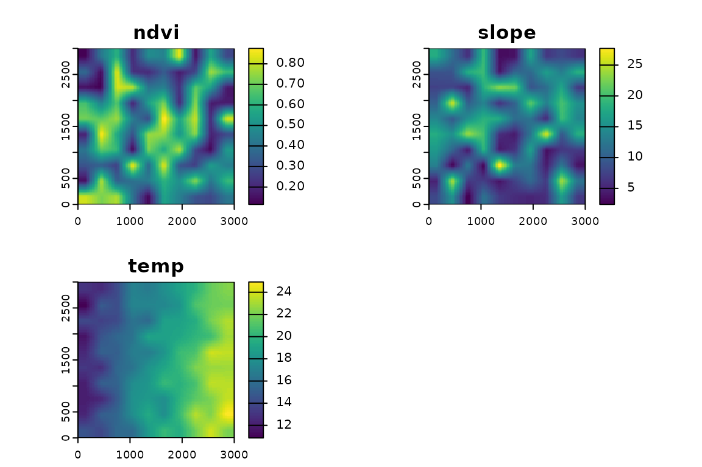
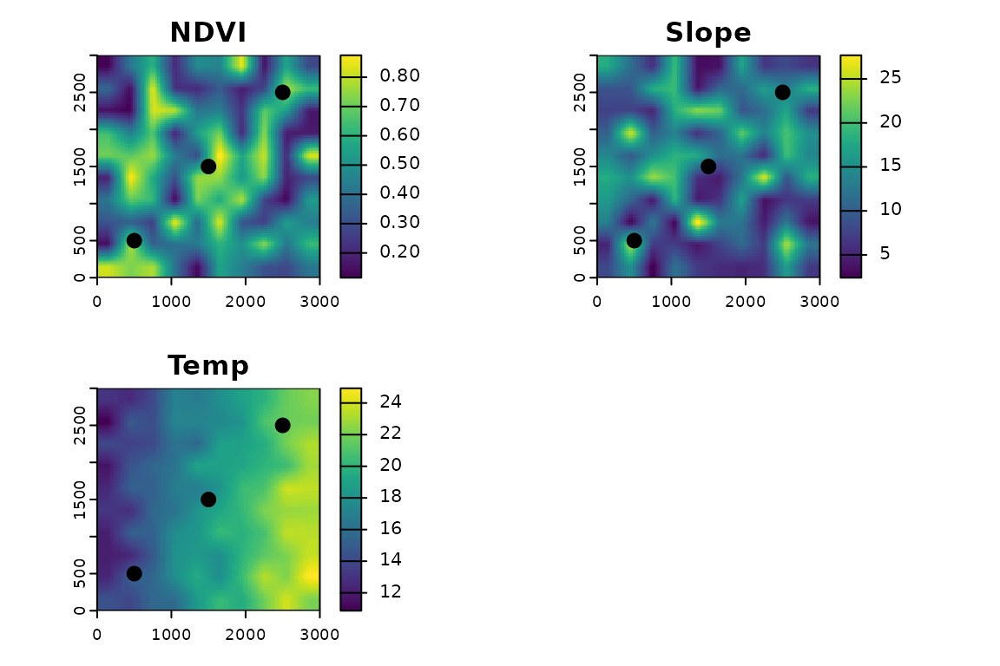
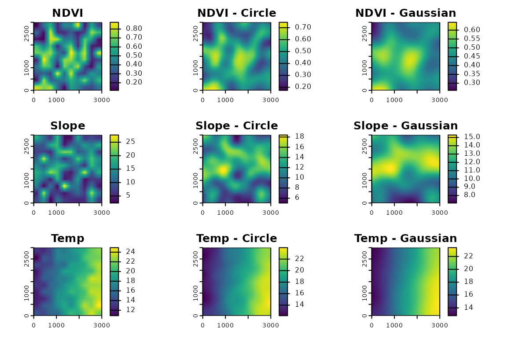
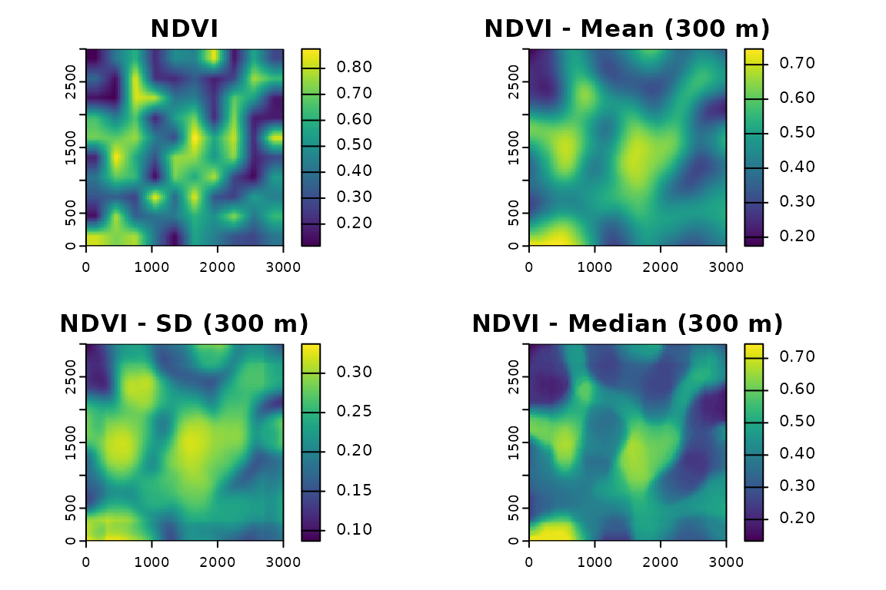
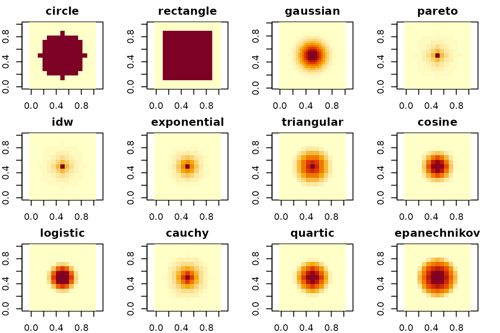

fastfocal: Fast Multi-scale Raster Extraction and Moving Window Analysis with FFT
Version 0.1.3 (2025)
Ho Yi Wan
Source:vignettes/index.Rmd
index.RmdWhat is fastfocal?
I created the fastfocal R package (Wan 2025) for
multi-scale ecological modeling that requires focal statistics at
various spatial scales. As rasters and kernels grow larger, traditional
methods can become slow. fastfocal is designed for
high-performance focal and buffer-based raster processing. It provides
fast moving-window operations and point-based extraction with a variety
of window (kernel) shapes. The package can automatically switch to a
Fast Fourier Transform (FFT) backend for large-kernel operations, and
otherwise use the C++ backend via terra for smaller cases.
It is built on terra and works with SpatRaster
and SpatVector objects.
This vignette walks through the core functionality using simulated
raster layers and step-by-step examples. We highlight how
fastfocal() and fastextract() support
multi-scale analysis with flexible kernel definitions.
Key features
- Multi-layer raster support: apply focal operations across stacked rasters.
- Flexible kernels: choose from many window types (e.g., circle, gaussian, logistic, quartic).
- Map-unit radius: specify smoothing or extraction radius directly in meters (map units).
- Point-based extraction: extract raster summaries at points with optional buffer windows.
- FFT backend: automatically selected for large kernels; C++ backend otherwise.
- Identical geometry output: results maintain resolution, extent, and CRS.
Simulating rasters for this vignette
We generate three example rasters with values resembling ecological variables. Users can replace these with their own data.
set.seed(888)
ndvi_coarse <- rast(matrix(runif(100, 0.1, 0.9), 10, 10)) # NDVI (0.1 - 0.9)
slope_coarse <- rast(matrix(rbeta(100, 2, 5) * 40, 10, 10)) # slope (degrees)
temp_coarse <- rast(matrix(seq(12, 24, length.out = 100) + rnorm(100, 0, 1), 10, 10)) # temperature with gradient
# Disaggregate to finer resolution
ndvi <- disagg(ndvi_coarse, fact = 10, method = "bilinear")
slope <- disagg(slope_coarse, fact = 10, method = "bilinear")
temp <- disagg(temp_coarse, fact = 10, method = "bilinear")
# Set a 3 km by 3 km extent for all layers (projected units, e.g., meters)
ext(ndvi) <- ext(0, 3000, 0, 3000)
ext(slope) <- ext(ndvi)
ext(temp) <- ext(ndvi)
crs(ndvi) <- "EPSG:32611" # UTM Zone 11N
crs(slope) <- crs(ndvi)
crs(temp) <- crs(ndvi)
# Combine into a multi-layer SpatRaster
r <- c(ndvi, slope, temp)
names(r) <- c("ndvi", "slope", "temp")
plot(r)
Point and buffer-based extraction
Use fastextract() to extract values at points and,
optionally, within buffers of different sizes.
# Simulate some points
pts <- vect(matrix(c(500,500, 1500,1500, 2500,2500), ncol=2, byrow=TRUE), type="points", crs=crs(r))
oldpar <- par(no.readonly = TRUE)
par(mfrow = c(2, 2))
plot(r[[1]], main = "NDVI"); plot(pts, add = TRUE, pch = 20, cex = 2)
plot(r[[2]], main = "Slope"); plot(pts, add = TRUE, pch = 20, cex = 2)
plot(r[[3]], main = "Temp"); plot(pts, add = TRUE, pch = 20, cex = 2)
par(oldpar)
fastextract(r, pts) # default d = 0 (extract at the point)
#> ndvi slope temp
#> 1 0.6658126 19.670246 14.81806
#> 2 0.6949464 9.219483 18.15735
#> 3 0.6780907 14.060074 21.59218
fastextract(r, pts, d = c(0, 100, 500)) # multiple distances
#> scale_m ndvi slope temp
#> 1 0 0.6658126 19.670246 14.81806
#> 2 0 0.6949464 9.219483 18.15735
#> 3 0 0.6780907 14.060074 21.59218
#> 4 100 0.6360472 18.382909 14.71503
#> 5 100 0.6728916 9.907261 18.03447
#> 6 100 0.6570599 14.158440 21.57079
#> 7 500 0.4974165 10.071724 14.27471
#> 8 500 0.5927882 10.990221 18.42000
#> 9 500 0.4596431 12.622186 21.19114
fastextract(r, pts, d = c(0, 100, 500, 1000), w = "gaussian", fun = "sd")
#> scale_m ndvi slope temp
#> 1 0 0.66581255 19.6702461 14.8180637
#> 2 0 0.69494641 9.2194834 18.1573544
#> 3 0 0.67809069 14.0600739 21.5921764
#> 4 100 0.07220881 2.9682259 0.3835902
#> 5 100 0.05762610 1.7198168 0.2811265
#> 6 100 0.05638283 0.6116993 0.1554291
#> 7 500 0.16700735 4.0240024 1.2851331
#> 8 500 0.13796024 4.0145802 1.0747937
#> 9 500 0.14607090 3.0540960 1.0370660
#> 10 1000 0.16743288 4.7700249 2.0488525
#> 11 1000 0.14806001 4.3093104 1.9286310
#> 12 1000 0.16439540 3.5861606 1.7249144Moving-window analysis
Apply fastfocal() to compute moving-window statistics
over the stack using different kernels and summary functions.
# Focal means using a circular window (300 m radius)
f_circ <- fastfocal(r, d = 300, w = "circle", fun = "mean")
# Focal means using a gaussian window (300 m radius)
f_gaus <- fastfocal(r, d = 300, w = "gaussian", fun = "mean")
oldpar <- par(no.readonly = TRUE)
par(mfrow = c(3, 3), mar = c(2, 2, 2, 2))
plot(r[[1]], main = "NDVI"); plot(f_circ[[1]], main = "NDVI - Circle"); plot(f_gaus[[1]], main = "NDVI - Gaussian")
plot(r[[2]], main = "Slope"); plot(f_circ[[2]], main = "Slope - Circle"); plot(f_gaus[[2]], main = "Slope - Gaussian")
plot(r[[3]], main = "Temp"); plot(f_circ[[3]], main = "Temp - Circle"); plot(f_gaus[[3]], main = "Temp - Gaussian")
par(oldpar)Comparing statistics on one layer
f_mean <- fastfocal(r, d = 300, fun = "mean", na.rm = TRUE)
f_sd <- fastfocal(r, d = 300, fun = "sd", na.rm = TRUE)
f_median <- fastfocal(r, d = 300, fun = "median", na.rm = TRUE)
oldpar <- par(no.readonly = TRUE)
par(mfrow = c(2, 2))
plot(r[[1]], main = "NDVI")
plot(f_mean[[1]], main = "NDVI - Mean (300 m)")
plot(f_sd[[1]], main = "NDVI - SD (300 m)")
plot(f_median[[1]],main = "NDVI - Median (300 m)")
par(oldpar)Visualizing supported kernels
This section visualizes the built-in window types supported by
fastfocal_weights(). We keep the radius modest so the code
runs quickly in the vignette.
center_r <- rast(ext(0, 90, 0, 90), resolution = 30, crs = "EPSG:32611")
kernel_types <- c("circle", "rectangle", "gaussian", "pareto", "idw", "exponential",
"triangular", "cosine", "logistic", "cauchy", "quartic", "epanechnikov")
pad_kernel <- function(k, pad = 2) {
nr <- nrow(k); nc <- ncol(k)
out <- matrix(0, nrow = nr + 2 * pad, ncol = nc + 2 * pad)
out[(pad + 1):(pad + nr), (pad + 1):(pad + nc)] <- k
out
}
oldpar <- par(no.readonly = TRUE)
par(mfrow = c(3, 4), mar = c(2, 2, 2, 2))
for (w in kernel_types) {
k_raw <- fastfocal_weights(center_r, d = 150, w = w, normalize = FALSE) # ~11x11 at 30 m
k_pad <- pad_kernel(k_raw, pad = 2)
k <- k_pad / max(k_pad, na.rm = TRUE)
image(k, main = w, col = hcl.colors(20, "YlOrRd", rev = TRUE), zlim = c(0, 1), asp = 1, cex.main = 1.2)
}
par(oldpar)Notes
- Multi-layer support is built into
fastfocal(). - Input can be a single-layer raster or a stack.
- Output preserves layer names and returns a
SpatRasterwith the same geometry. - Kernel size
dis in map units (e.g., meters).
Explore more
See the benchmark comparison: vignettes/benchmark.Rmd
(built as inst/doc/benchmark.html).
Session info
sessionInfo()
#> R version 4.5.1 (2025-06-13)
#> Platform: x86_64-pc-linux-gnu
#> Running under: Ubuntu 24.04.3 LTS
#>
#> Matrix products: default
#> BLAS: /usr/lib/x86_64-linux-gnu/openblas-pthread/libblas.so.3
#> LAPACK: /usr/lib/x86_64-linux-gnu/openblas-pthread/libopenblasp-r0.3.26.so; LAPACK version 3.12.0
#>
#> locale:
#> [1] LC_CTYPE=C.UTF-8 LC_NUMERIC=C LC_TIME=C.UTF-8
#> [4] LC_COLLATE=C.UTF-8 LC_MONETARY=C.UTF-8 LC_MESSAGES=C.UTF-8
#> [7] LC_PAPER=C.UTF-8 LC_NAME=C LC_ADDRESS=C
#> [10] LC_TELEPHONE=C LC_MEASUREMENT=C.UTF-8 LC_IDENTIFICATION=C
#>
#> time zone: UTC
#> tzcode source: system (glibc)
#>
#> attached base packages:
#> [1] stats graphics grDevices utils datasets methods base
#>
#> other attached packages:
#> [1] fastfocal_0.1.4 terra_1.8-60
#>
#> loaded via a namespace (and not attached):
#> [1] digest_0.6.37 desc_1.4.3 R6_2.6.1 codetools_0.2-20
#> [5] fastmap_1.2.0 xfun_0.53 cachem_1.1.0 knitr_1.50
#> [9] htmltools_0.5.8.1 rmarkdown_2.29 lifecycle_1.0.4 cli_3.6.5
#> [13] pkgdown_2.1.3 sass_0.4.10 textshaping_1.0.3 jquerylib_0.1.4
#> [17] systemfonts_1.2.3 compiler_4.5.1 tools_4.5.1 ragg_1.5.0
#> [21] evaluate_1.0.5 bslib_0.9.0 Rcpp_1.1.0 yaml_2.3.10
#> [25] jsonlite_2.0.0 rlang_1.1.6 fs_1.6.6Citation
To cite the package:
Wan, H. Y. (2025). fastfocal: Fast Multi-scale Raster Extraction and Moving Window Analysis with FFT. R package version 0.1.3. Zenodo. https://doi.org/10.5281/zenodo.17074691
citation("fastfocal")
#> To cite fastfocal in publications, please use:
#>
#> Wan HY (2025). _fastfocal: Fast Multi-scale Raster Extraction and
#> Moving Window Analysis with FFT_. doi:10.5281/zenodo.17074691
#> <https://doi.org/10.5281/zenodo.17074691>, R package version 0.1.3,
#> <https://hoyiwan.github.io/fastfocal/>.
#>
#> A BibTeX entry for LaTeX users is
#>
#> @Manual{,
#> title = {fastfocal: Fast Multi-scale Raster Extraction and Moving Window Analysis with FFT},
#> author = {Ho Yi Wan},
#> year = {2025},
#> note = {R package version 0.1.3},
#> doi = {10.5281/zenodo.17074691},
#> url = {https://hoyiwan.github.io/fastfocal/},
#> publisher = {Zenodo},
#> }